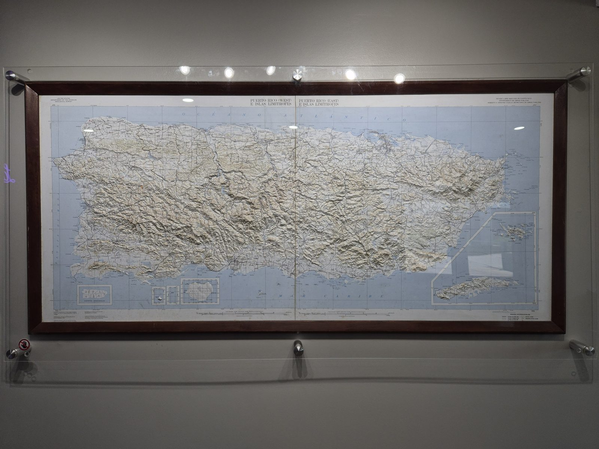

About
A house of travel in Puerto Rico, run by people from here.
Last Antilla Travel Co.
Days and journeys, from people who call the island home.
We design days across Puerto Rico, private or shared, and private journeys that join them. We are from here, and we know the island from the inside: the road worth the extra hour, the table worth the wait, the river at the hour it is quiet.
The idea is simple. For us, a good trip is measured in time and attention, not in adjectives. You see the whole island, and you see it in depth, at your own pace. You never have to arrange a thing.
One host, one vehicle, and days that were thought through before you landed.

The name
Why Last Antilla
Puerto Rico is the smallest and the easternmost of the Greater Antilles, the four large islands of the Caribbean. Sail east from here and the chain breaks into the small islands of the Lesser Antilles. Of the great islands, this is the last.
The name itself began as a legend. In 1424 a Venetian chart drew Antillia, an imagined island far out in the Atlantic. The legend faded; the name stayed, and passed to the real islands of the Caribbean.
Long before either name, the people who lived here called the island Borikén. It is where the word boricua comes from, and it is still how many here speak of home.
The name speaks of where we are and who we are. It is not nostalgia for another century, and it is not the promise of an empty island. Puerto Rico is lived in, and its people are the best reason to come.

Our hosts
A host at the wheel
Your host is from the island and speaks English and Spanish, knows its history, its back roads and the people who keep its traditions, and knows every day in the collection by heart.
The day starts with a pickup: where you are staying on a private day, or in Old San Juan, Condado or Isla Verde on a shared one. From the first stop to the last, the same person drives, walks and sits at the table with you: someone who knows when to talk and when to let the view speak, who introduces you to the people who make the island what it is, and who can tell when the day asks for a change of plan.
Considered, always
What you can count on
Clear from the start.
Each day is described as it is: the place, the table, the hour the light softens. Nothing inflated, nothing left vague.
The island’s people, first.
Growers, cooks and artisans are at the heart of every day, introduced by name and met with respect. Communities are neighbors, never scenery.
Honest, gently.
Weather, access and timing are not always in anyone’s hands. When something may change, you will know early, and the day will be shaped around it.
Discreet, always.
Your trip stays yours. Celebrations and personal details are kept in confidence, and no photograph or story is shared without your permission.
Six reasons
Why travel with us
Private or shared.
A day for your party alone, or shared with a small group with the same day in mind. Journeys are always private. The same host and the same care either way.
A host at the wheel.
Someone from here who drives you, speaks English and Spanish, and changes the plan when the day asks for it.
Arranged before you land.
Tables, entrances and timings are held in advance, so the day runs without you watching the clock.
Never rushed.
On a private day, stay longer where you want and skip what does not interest you. A shared day follows a set plan, with a group small enough that no one is hurried.
Days we know well.
Every day in the collection follows roads, tables and rivers our hosts know by heart.
Honest about the island.
We will tell you what depends on the weather and what we cannot promise, before you book.

Plan your daysAn island is best shown by the people who live on it.